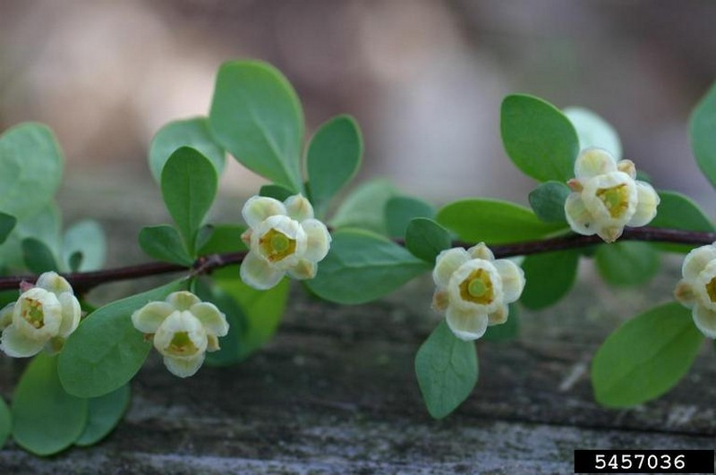
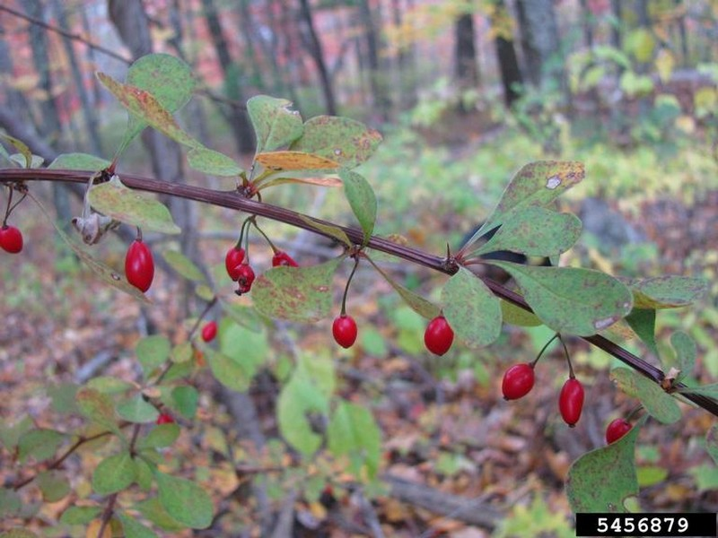
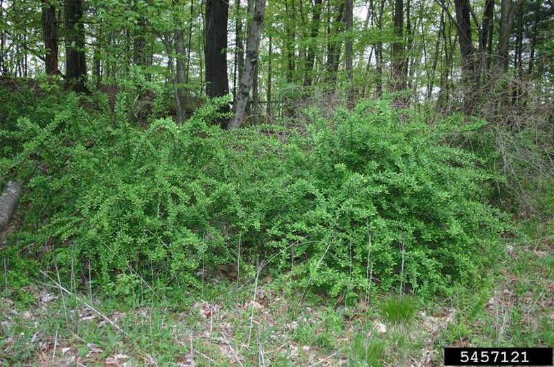
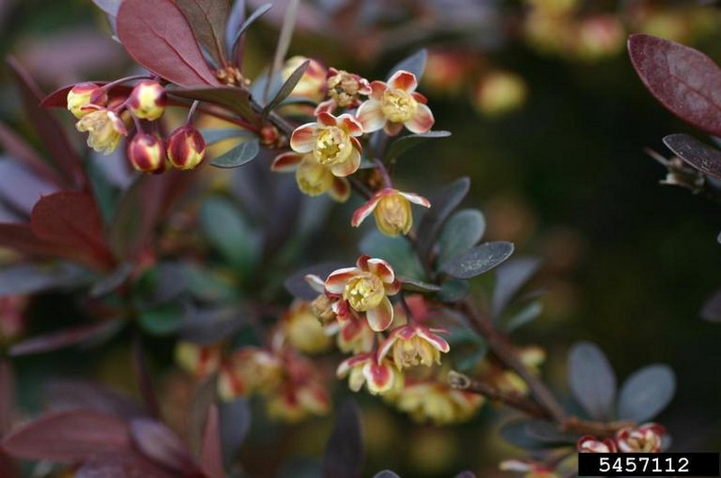
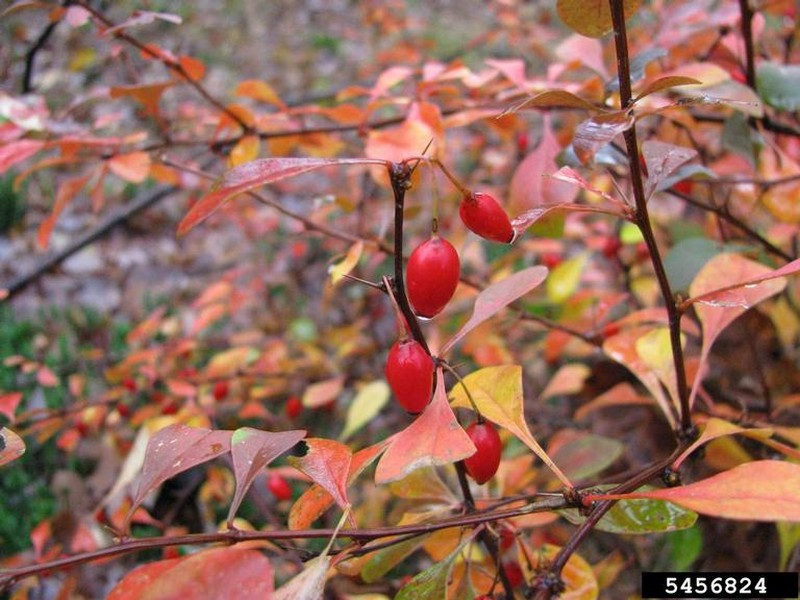

photo: Leslie J. Mehrhoff, University of Connecticut, Bugwood.org
Barberry (Berberis thunbergii)
Leslie J. Mehrhoff, University of Connecticut, Bugwood.org |
Leslie J. Mehrhoff, University of Connecticut, Bugwood.org |
Leslie J. Mehrhoff, University of Connecticut, Bugwood.org |
Leslie J. Mehrhoff, University of Connecticut, Bugwood.org |
Leslie J. Mehrhoff, University of Connecticut, Bugwood.org |
{kind=link}
{kind=link}
{kind=link}
{kind=link}
{kind=link}
Form:
Small, round, dense, spiny shrub, typically 2-3' tall, though it may grow up to 6' tall and 6' wide. The branches are reddish-brown, deeply grooved, somewhat zig-zag in form, and bear a single sharp spine at each node.
Leaves:
Small, alternate, entire, and oval to spatulate. May be green, bluish-green, or dark reddish-purple, depending on the cultivar. Arranged in clusters above single spines.
Flowers:
Small, yellow, umbrella-shaped, with 6 petals. Single or in clusters of 2-4. Bloom in mid-spring.
Fruits and Seeds:
Small, bright red, oblong berries. Single or in clusters on narrow stalks. Mature in mid-summer and persist on shrub into winter. Dispersed by birds.
Roots:
Spreads vegetatively through horizontal lower branches that root freely when they touch the ground. Roots are yellow inside.
Similar Species:
American Barberry (Berberis canadensis) native
European Barberry (Berberis vulgaris) non-native
Tier 2 - Assess As Needed
The size and extent of these species populations are currently being inventoried with limited geographic information available. This survey will assist with identifying future control targets as populations are defined.
Action: The inventory of these plants is ongoing. The approximate number of plants should be recorded keeping in mind population sizes may be highly variable.